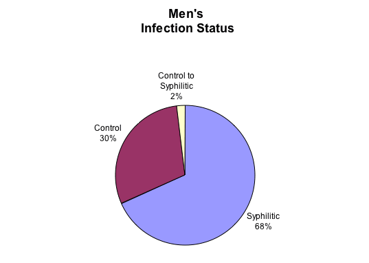
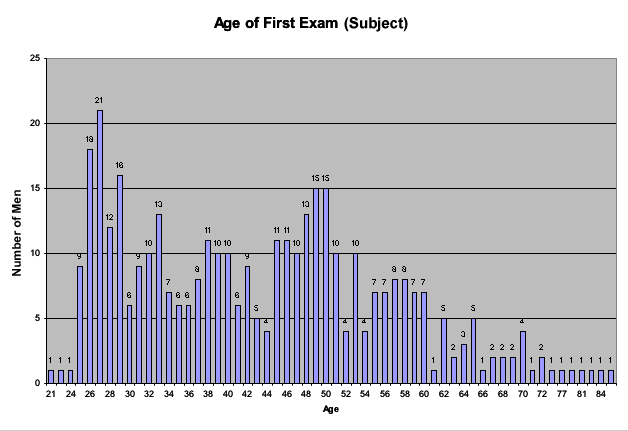
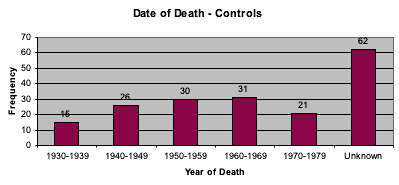
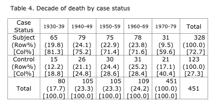
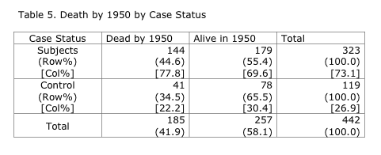
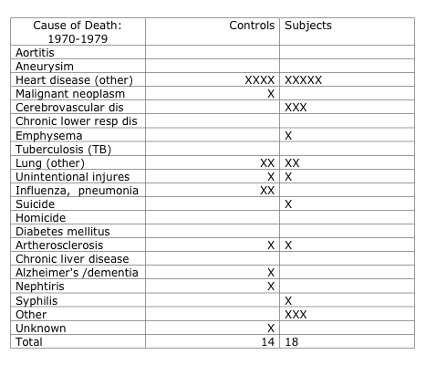

flowchart LR A[Variable type] --> B(Categorical) A[Variable type] --> C(Quantitative)
DATA 202 - Week 3
Theory Construction
Part I: Context
Case Study
Tuskegee Study of Untreated Syphilis in the Negro Male
We begin by exploring a critical historical issue in statistics: understanding the ethics of a medical intervention or study.

“In 1932, the USPHS, working with the Tuskegee Institute, began a study to record the natural history of syphilis. It was originally called the”Tuskegee Study of Untreated Syphilis in the Negro Male” (now referred to as the “USPHS Syphilis Study at Tuskegee”). The study initially involved 600 Black men – 399 with syphilis, 201 who did not have the disease. Participants’ informed consent was not collected.” (Office of Science, Centers for Disease Control and Prevention, 2022)
All images are from Examining Tuskegee by Susan Reverby.














Ethics and statistics
This case study will help frame our understanding between ethics and statistics. The study will allow us to explore longstanding injustices, consider ethical practices in historical contexts, and explore the sociology of statistics. More specifically, we will use this case to understand the history of the Institutional Review Board (IRB) and discuss concepts related to scientific racism. These explorations will help in two key ways: first, we will come to understand what it can mean to be critical in the context of statistics and, second, we will be prepared to respond to problems focused on main concepts in the first few weeks of our course. We will then formalize a few terms.
Framing a relationship between ethics and statistics
The “Tuskegee Study of Untreated Syphilis in the Negro Male” (now referred to as the “USPHS Syphilis Study at Tuskegee”) took place in Macon County, Alabama, in an area known as the “Black Belt” because of its rich soil and vast number of Black sharecroppers who were the economic backbone of the region. The research took place at the Tuskegee Institute.
Purpose of the study
The intent of the study was to record the natural progression of syphilis in Black men. The study was related to a 1928 retrospective study, the “Oslo Study of Untreated Syphilis,” which reported on the pathological manifestations of untreated syphilis in several hundred white males. However, this original study used secondary data to piece together findings. When the study was initiated in the U.S., there were no proven treatments for the disease. Researchers told the men participating in the study that they were to be treated for “bad blood.” This term had been used by local community members to describe a host of ailments that could be diagnosed including things like anemia, fatigue, and syphilis.
Study participants
A total of 600 men were enrolled in the study.
- Of this group 399, who had syphilis were a part of the experimental group, and 201 were control subjects.
- Most of the men were poor and illiterate sharecroppers from the county.
- The participants were offered medical care and insurance.
- They were enrolled in the study with incentives as well, including medical exams, rides to and from the clinics, meals on examination days, free treatment for minor ailments and guarantees that provisions would be made after their deaths in terms of burial stipends paid to their survivors.
Ethical issues
- There were no proven treatments for syphilis when the study began in 1932.
- When penicillin became the standard treatment for the disease in 1947 the medicine was withheld as a part of the treatment for both the experimental group and control group.
- On July 25, 1972, Jean Heller of the Associated Press broke the story that appeared in both New York and Washington, that there had been a 40-year non-therapeutic experiment called “a study” on the effects of untreated syphilis on Black men in the rural South.
- Between the start of the study in 1932 and 1947, the date when penicillin was determined as a cure for the disease, dozens of men had died and their wives, children and untold number of others had been infected.
- There was evidence that scientific research protocol routinely applied to human subjects was either ignored or deeply flawed to ensure the safety and well-being of the men involved. Specifically, the men were never told about or offered the research procedure called informed consent.
Researchers had not informed the men of the actual name of the study, its purpose, and potential consequences of the treatment or non-treatment that they would receive during the study. The men never knew of the debilitating and life-threatening consequences of the treatments they were to receive, the impact on their partners and children they may have conceived once involved in the research. The panel also concluded that there were no choices given to the participants to quit the study when penicillin became available as a treatment and cure for syphilis. Reviewing the results of the research the panel concluded that the study was “ethically unjustified.” The panel articulated all the above findings in October of 1972 and then one month later the Assistant Secretary for Health and Scientific Affairs officially declared the end of the Tuskegee Study.
Class-Action Suit
In the summer of 1973, Attorney Fred Gray filed a class-action suit on behalf of the men in the study, recognized partners, children, and families. It ended a settlement giving more than $9 million to the study participants. Despite these reparative measures, the effects remain.

Institutional Review Board (IRB)
The Tuskegee Syphilis Study conducted by the U.S Public Health Service was only one of many other past abuses that included unethical experimentation on marginalized groups. As a result of these injustices, a set of mandates were instituted and policies are governed under the IRB, which define the rules and regulations for the approval of research activities. Other countries have equivalent measures focused on ethics.
Additional details about can be found online.
Learn more at https://www.cdc.gov/tuskegee/timeline.
Learn more about the Howard University IRB at the Office of Regulatory Research Compliance.
Group work
Problem #1:
Was the Syphilis Study at Tuskegee an experimental or an observational study? Explain.
Problem #2:
Was data collected for this study using probability or non-probability sampling methods?
Problem #3:
Based on your knowledge of the researchers for the USPHS Syphilis Study at Tuskegee, what was the most likely sampling method used to gather data? Explain.
Problem #4:
Based on your knowledge of the study and the data tables below, list five variables that were collected during the study and explain their variable types in detail.
Part II: Content
One main goal this week will be to understand theory and theory construction.
Theory
Some definitions:
Per the Oxford Languages dictionary, a theory is a supposition or a system of ideas intended to explain something, especially one based on general principles independent of the thing to be explained.
Per Britannica, a theory is an idea or set of ideas that is intended to explain facts or events.
We will need to think more acutely about theory development as we progress through the term.
- For now, how might you define a theory?
Theory construction
Per Markovsky & Webster (2015), theory construction is the process of formulating components of a theory into a logical whole.
We may consider some of the following elements as we prepare theoretical statements.
Research inquiry
Hypotheses
Analysis
Evaluation
Revision
Framing data and information
There are many different ways to conceptualize data and information.
Depending on our specific context, statistical needs, or research purposes, we can frame information as data, or data as information, or even place an equivalence statement between the two terms such that we have: \[\text{information} = \text{data}\]
As we continue to explore what it should mean to be critical in the context of statistics, we will need some common language and base definitions to understand the processes involved in a statistical study.
We defined statistics as the science of collecting, organizing, analyzing, interpreting, communicating, and visualizing data and information. “Collecting” and “organizing” – the first two steps of this process – requires that we define what we mean by data and information.
Data and information
The term “information” is a universal concept that is highly useful but it also lacks precision.
In every day terms, information is defined rather loosely.
In statistics, however, we might contend that information becomes data when it is collected and organized in some form or fashion.
Thus, it takes some structure to turn information into usable data.
One method of organizing collections of data or information is in a Microsoft Excel sheet.

A spreadsheet in a traditional format contains important features that will support data analysis.
Columns are vertical arrangements of sets.
– Columns are represented by capital letters: \(A\), \(B\), \(C\), and so on.
– We relate columns to sets, which we defined as collections of elements or items.
Rows are horizontal arrangements of elements.
– Rows are represented by numbers and relate to the index of a set.
– The subscript \(i \in \mathbb{N}\) such that \(i = 1, 2, 3, ...\), indicates an element’s position.
There are many different file extensions.
For example, the file extension for an MS Excel document can be .xlxs, .csv, or .htm.
CSV (.csv) files remove all formatting.
– The removal of formatting helps to reduce errors when transferring data between computers or software programs.
“CSV” stands for comma-separated values.
Formatting data into a data frame
Although the CSV format removes formatting, the file is not yet in a structure that we can use to conduct efficient statistical analyses.
The CSV format supports a user with collecting and organizing information into a usable data structure.
However, the data needs to be sent to a computer program to undergo the next step in our statistical process: analyzing data. Specifically, we re-format the CSV file to a data frame to conduct analyses.
Data frames are a common and popular way to structure, store, and share data.
Data frames allow analysts to store sets of observations that vary in size and content.
Each row describes a single observation.
Each column stores information for one set, or variable.
Recall that a set is a collection of elements.
- We extend this definition to say that a set is a collection of \(n \in \mathbb{N}\) elements, where \(n\) refers to the number of elements in the set.
Note – Sets with \(n\) elements
If \(X\) is a set with \(n\) elements, then \(X\) can be represented as \(X = \{x_1, x_2, x_3, ..., x_n \}\).
If \(Y\) is a set with \(n\) elements, then \(Y\) can be represented as \(Y = \{y_1, y_2, y_3, ..., y_n \}\).
The value of \(n\) can be used to represent the “size” of a set.
- A set with no elements is referred to as the empty set and can be represented as \(\{ \emptyset \}\).
We will need to make sense of the various objects that a set can contain.
First, we think more mathematically about sets and data frames.
A data frame containing only numbers is an \(n \times m\) matrix:
\(n\) refers to the number of rows (or observations)
\(m\) refers to the number of columns (or variables)
By formatting a series of sets into a data frame, we get
\(n\) rows (each row containing data on a single observation)
\(m\) columns (which contain elements over a variable’s values)
Data frame containing \(n\) observations for \(2\) variables (\(X\) and \(Y\))
Take, for example, two sets with the following ordered values:
Let \(X\) contain the odd values 1, 3, 5, and 7.
- We have \(X = \{1, 3, 5, 7 \}\)
Let \(Y\) contain the even values 2, 4, 6, and 8.
- We have \(Y = \{2, 4, 6, 8 \}\)
We set the following to be true:
\(x_1 = 1\), \(x_2 = 3\), \(x_3 = 5\), \(x_4 = 7\)
\(y_1 = 2\), \(y_2 = 4\), \(y_3 = 6\), \(y_4 = 8\)
By combining the sets \(X\) and \(Y\), we create the following data frame:
We list the index of each element of each set using a new column – ID (for index).
This \(n \times m\) data frame contains
\(n = 4\) observations
\(3\) variables
- ID
- \(X\)
- \(Y\)
We can consider this structure more generally as noted below.

Population and sample
The difference between big \(N\) (a population) and little \(n\) (a sample)
Note
When referring to the size of a population, use a capital \(N\).
When referring to the size of a sample, use a lowercase \(n\).
Population parameter vs. Sample statistic
Statistics vs. A statistic
Note – Statistics (plural) versus a statistic (singular)
There is a difference between the term statistics (plural) and a statistic (singular).
We previously defined statistics (with an ‘s’ at the end) as the science of collecting, organizing, analyzing, interpreting, communicating, and visualizing data and information.
A statistic (no ‘s’ at the end) refers to a measurement or value from a test on a sample.
Census

There are many sites with free and publicly available data that can help us make better sense of how others have collected data on populations and samples.
– Sampling of websites with freely accessible data (no downloads required)
In our course, we will focus on integrating how we structure and analyze data by using various mathematical concepts to frame the process of conducting a statistical study.
What is a variable?
There are many types of data and variables used in statistics.
The type of variable helps determine the appropriate methods for analysis.
– Categorical or Quantitative
The level of measurement helps determine how we measure variables.
– Nominal, Ordinal, Interval, Ratio
Variable types
There are two main variable types: categorical and quantitative variables.
Data that are categorical in nature are non-numeric.
– Categorical values are labels used to represent categories or data values.
Data that are quantitative in nature are numeric.
– Quantitative values make use of the sets of numbers to represent counts or measures.
We can further distinguish between these categories using the following definitions:
flowchart LR A[Variable type] --> B(Qualitative) A[Variable type] --> C(Quantitative) C --> D(Discrete) C --> E(Continuous) B --> F(Nominal) B --> G(Ordinal)
Levels of measurement
Levels of measurement are used to describe variable types.
| Level of measurement | Brief description | Examples |
|---|---|---|
| Nominal | Data cannot be arranged in some order. Only categories are used. | Eye color, city |
| Ordinal | Data can be arranged in some order but differences cannot be found or are meaningless. | Rankings, likert scale |
| Interval | There is not a natural zero starting point and rations are meaningless. | Temperatures, years |
| Ratio | There is a natural zero starting point and ratios are meaningful. | Heights, distances |

Part III: Code
Task 0: Understanding the RStudio IDE

Task 1: Create an RMarkdown file (.Rmd)
We will conduct most of our work using what is called an RMarkdown.
The RMarkdown files allows us to save and annotate our code for future use.
When you run code from an RMarkdownt, it will show up in the Console (bottom left pane in RStudio).
In the RStudio IDE, open an RMarkdown by using the following navigation:
- File > New File > R Markdown
Using the RMarkdown file
Preamble
The preamble begins at the top of your RMarkdown file with three dashes.
# ---
# title: "Title goes here"
# bibliography: references.bib # include references file
# csl: apa.csl # include cls file for your references
# always_allow_html: true
# output:
# word_document:
# reference_docx: "word-styles-reference.docx" # include style file
# fig_caption: true
# pdf_document:
# toc: false
# toc_depth: 2
# number_section: true
# html_document:
# toc: true
# toc_depth: 2
# number_sections: true
# theme: flatly
# geometry: margin=1.0in
# editor_options:
# markdown:
# wrap: sentence
# ---Setup
The set-up chunk gives the file further instructions.
# ```{r setup, include=FALSE}
# knitr::opts_chunk$set(
# echo = FALSE, # By default, hide code; set to TRUE to see code
# fig.pos = 'th', # Places figures at top or here
# out.width = '100%', dpi = 300, # Figure resolution and size
# fig.env="figure"
# ) # Latex figure environment
# install.packages("praise")
# library(praise)
# layout="l-body-outset"
# library(rmarkdown)
# options(knitr.table.format = "latex") # For kable tables to write LaTeX table directly
# ```Inserting code into an RMarkdown
y <- 2 + 2# You can use the `#` symbol to leave notes above your code.
y <- 2 + 2 # You can use the `#` symbol to leave notes in-line with your code.We just defined an object y. We can see its value by running this syntax and typing y into the Console.
y[1] 4The output on your screen should match the last line above - with the hashtags.
[ 1 ] indicates a single line of results.
The output tells us that y has a value of 4, so we say that y is numeric or that it has a numeric value.
You can run code by clicking ‘Run’ at the top of the Source window, or by typing CMD+Enter
Task 2: Explore different object types
For this task, we will explore three object types: numeric, character, and logic values.
Task 2-a: Compute a mathematical statement and create a numeric variable
1 + 2[1] 3We can assign a variable to this statement by using an assignment operator: <-
a <- 1 + 2We can also use an equal sign to assign values: \(=\)
a = 1 + 2Type “a” to show the value of the variable
a[1] 3Create a numeric variable “b” that is the product of “a” and “y”
b = a*yType “b” in your console to show the product of the two variables
b[1] 12Divide b by 4
b / 4[1] 3Take the square root of b
sqrt(b)[1] 3.464102Compute the natural log of b
log(b)[1] 2.484907Compute the common log of b
log10(b)[1] 1.079181Find 1 minus the square root of b
1-sqrt(b)[1] -2.464102Attempt to find the square root of “1 minus the square root of b” - which is a negative value
sqrt(1-b)Warning in sqrt(1 - b): NaNs produced[1] NaNNaN stands for “Not a number”. This occurs because there is currently no defined value to recognize the square root of negative numbers in R. But we can compute the square root on the absolute value of this difference, if needed.
sqrt(abs(1-b))[1] 3.316625We can insert longer or more complex mathematical statements too. For example, we can find the absolute value of the sum of -1 and the square root of b cubed and then subtract from that the value of 3 times the square root of b.
Notice the use of parentheses.
abs(-1+sqrt(b^3)) - 3*(sqrt(b))[1] 30.17691We can override the original value of y to match the mathematical statement we generated above.
y <- abs(-1+sqrt(b^3)) - 3*(sqrt(b))
y[1] 30.17691We consider all of the previous objects to be numeric.
Task 2-b: Create a non-numeric value
We can also create objects to hold non-numeric values.
There are two types of non-numeric values: character values and logic values.
Character values
character <- 'some label'
character[1] "some label"We can create a character value using the ‘,’ or “,” quotes.
character <- "some label"
character[1] "some label"Logic values
Logic values can either be TRUE or FALSE
logic_true <- TRUE
logic_false <- FALSElogic_true[1] TRUElogic_false[1] FALSEWe can also use T for TRUE and F for FALSE.
logic_true <- T
logic_false <- Flogic_true[1] TRUElogic_false[1] FALSETask 3: Creating vectors
When we want to list multiple objects or values, we use R’s available data types, such as vectors and factors.
We concatenate values in these data types using the operator c( ) to place our values in the order we desire.
Concatenate means to place things together one after the other.
Vectors
Vectors are a data type we use to order values (i.e., numeric, character, logic) or mix different values.
For example, we can store all of the numbers from 1 to 9 in a vector by using a colon.
my.vector <- c(1:9)
my.vector[1] 1 2 3 4 5 6 7 8 9When creating vectors, we use the assignment operator and the concatenate option to generate our object.
vec1 <- c("WEB Du Bois", 1868, "17th", "MA", "civil rights activist")
vec1[1] "WEB Du Bois" "1868" "17th"
[4] "MA" "civil rights activist"Notice that my numeric and logic values do not use quotations, but a character value uses quotations ““.
Factors
Factors are a data type we use to store categorical variables for analyses and data plots. We will explore these later.
Task 4: Creating data frames
For this final task, we will create a list. Lists can contain anything: functions, vectors, other lists, and data frames.
To start, let’s create a series of vectors.
vec1 <- c("Ida B. Wells", "W.E.B Du Bois","Mary G. Ross", "Jaime Escalante","Etta Z. Falconer", "Bob Moses", "Ruth Gonzales")
vec2 <- c(1862, 1868, 1908, 1930, 1933, 1935, 1970)
vec3 <- c("MS", "MA", "OK", "Bolivia", "MS", "NYC", "NJ")
vec4 <- c(TRUE, TRUE, TRUE, FALSE, T, T, T)
vec5 <- c("African American", "Ghanaian American", "Native American", "Bolivian American", "African American", "African American", "Mexican American")
vec6 <- c("Journalist", "Sociologist", "Engineer", "Educator", "Mathematician", "Educator", "Engineer")Our objects vec1, vec3, and vec5 are made of character values
vec1[1] "Ida B. Wells" "W.E.B Du Bois" "Mary G. Ross" "Jaime Escalante"
[5] "Etta Z. Falconer" "Bob Moses" "Ruth Gonzales" vec3[1] "MS" "MA" "OK" "Bolivia" "MS" "NYC" "NJ" vec5[1] "African American" "Ghanaian American" "Native American"
[4] "Bolivian American" "African American" "African American"
[7] "Mexican American" vec6[1] "Journalist" "Sociologist" "Engineer" "Educator"
[5] "Mathematician" "Educator" "Engineer" Our object vec2 is made of numeric values
vec2[1] 1862 1868 1908 1930 1933 1935 1970Our object vec4 is a made of logic values
vec4[1] TRUE TRUE TRUE FALSE TRUE TRUE TRUELists
Lists allow us to do what the name implies - create a list of items.
my.list <- list(vec1, vec2, vec3, vec4, vec5, vec6)
my.list[[1]]
[1] "Ida B. Wells" "W.E.B Du Bois" "Mary G. Ross" "Jaime Escalante"
[5] "Etta Z. Falconer" "Bob Moses" "Ruth Gonzales"
[[2]]
[1] 1862 1868 1908 1930 1933 1935 1970
[[3]]
[1] "MS" "MA" "OK" "Bolivia" "MS" "NYC" "NJ"
[[4]]
[1] TRUE TRUE TRUE FALSE TRUE TRUE TRUE
[[5]]
[1] "African American" "Ghanaian American" "Native American"
[4] "Bolivian American" "African American" "African American"
[7] "Mexican American"
[[6]]
[1] "Journalist" "Sociologist" "Engineer" "Educator"
[5] "Mathematician" "Educator" "Engineer" In this form, lists can be hard to read.
Data frames
To solve the issue with the list, we will use our vectors to generate a specific type of list known as a data.frame.
Data frames are a subtype of lists made of vectors of equal lenght.
data.frame(vec1, vec2, vec3, vec4, vec5, vec6) vec1 vec2 vec3 vec4 vec5 vec6
1 Ida B. Wells 1862 MS TRUE African American Journalist
2 W.E.B Du Bois 1868 MA TRUE Ghanaian American Sociologist
3 Mary G. Ross 1908 OK TRUE Native American Engineer
4 Jaime Escalante 1930 Bolivia FALSE Bolivian American Educator
5 Etta Z. Falconer 1933 MS TRUE African American Mathematician
6 Bob Moses 1935 NYC TRUE African American Educator
7 Ruth Gonzales 1970 NJ TRUE Mexican American EngineerNotice the difference in how the information is arranged when data.frame.
Let’s label this data frame and put labels at the top of the list.
df <- data.frame(a=vec1, b=vec2, c=vec3, d=vec4, e=vec5, f=vec6)
df a b c d e f
1 Ida B. Wells 1862 MS TRUE African American Journalist
2 W.E.B Du Bois 1868 MA TRUE Ghanaian American Sociologist
3 Mary G. Ross 1908 OK TRUE Native American Engineer
4 Jaime Escalante 1930 Bolivia FALSE Bolivian American Educator
5 Etta Z. Falconer 1933 MS TRUE African American Mathematician
6 Bob Moses 1935 NYC TRUE African American Educator
7 Ruth Gonzales 1970 NJ TRUE Mexican American EngineerNotice that when I add labels using the equal sign operator, the vec labels dissapear and are replaced by the categorical labels that we insert. Let’s create more appropriate labels for the data we have generated.
df <- data.frame(name=vec1,
birthyear=vec2,
birthplace=vec3,
USborn=vec4,
nationality=vec5,
occupation=vec6)For future use, we can view our data frame by just typing its name into our console or typing View(df).
df name birthyear birthplace USborn nationality occupation
1 Ida B. Wells 1862 MS TRUE African American Journalist
2 W.E.B Du Bois 1868 MA TRUE Ghanaian American Sociologist
3 Mary G. Ross 1908 OK TRUE Native American Engineer
4 Jaime Escalante 1930 Bolivia FALSE Bolivian American Educator
5 Etta Z. Falconer 1933 MS TRUE African American Mathematician
6 Bob Moses 1935 NYC TRUE African American Educator
7 Ruth Gonzales 1970 NJ TRUE Mexican American Engineer